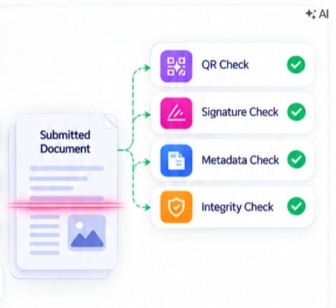

01
STEP 01
Scan / Upload
Scan the document QR code or upload a PDF/image to start secure verification.
✓ QR Code Scan
✓ PDF / Image Upload
✓ Document ID Detection
✓ Secure Submission
Verify digital credentials through cryptographic proof, issuer authentication and evidence-backed document analysis.
Scan the document QR code or upload a PDF/image to start secure verification.
VeriProof identifies the issuer, retrieves the trusted registry record and checks verifier authorization.
Multiple verification layers compare the submitted document against the trusted issuer record and detect tampering or suspicious alterations.

Receive an explainable verdict with TrustScore, detected evidence, reasons and a downloadable verification report.